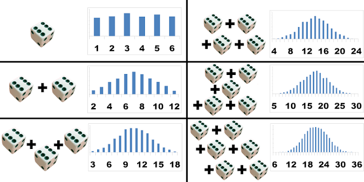

Enter a part and a whole. The tool converts the fraction to a percentage and shows the equivalent central area of a normal distribution.
÷
75.00%
75 / 100
Explore grade cutoffs
Choose a grade to explore its lower cutoff out of 100; F uses 59.99% as an example below 60%. These ranges describe this grading scale; other schools may differ. The bell shows the corresponding middle area, not your grade’s percentile or class ranking.
Find the same area:
Hover or tap an area in the bell, pie, or bar to highlight its match. You can also use these buttons.
Choose an area to connect the pictures.
Normal distribution
Your central percentage±1σ = 68.3%±2σ = 95.5%±3σ = 99.7%
Central area75.00%
Boundary±1.150σ
Each tail12.50%
In plain languageAbout 1.15 standard deviations on each side
Pie Chart (part of the whole)
12369
75.00%
Boundary-hand time 12:49:05
Dotted hand’s seconds position 56.59 s
Selected 75.00%Remaining 25.00%
Reading the clock
The purple area runs clockwise from the short hour hand to the long minute hand and matches your percentage. The dotted gray line, styled as a seconds hand, divides the remaining area into two equal parts, one for each tail of the normal distribution.
Both boundary hands move at normal clock speeds, starting at 12:00:00 at 0% and reaching approximately 1:05:27 at 100%. The dotted gray line’s angle gives its seconds position: 6° equals one second. This separate reading describes where the divider points, not the seconds of the boundary-hand time. At 0%, the gray circle is split by a diameter; at 100%, no remainder or divider is shown. Only the displayed readings are rounded.
Same percentage, two ways to see it
Think of the entire pie and the entire area under the bell curve as 100%. Purple represents the same share in both pictures.
Your numbers, in plain language
Lower tail · Purple middle · Upper tail (shares of the total area)
1. How to read the bell
Read left to right as smaller to larger values. The middle, marked μ (“mu”), is the average. The curve is taller near the average because values cluster there; values far from the average are less common.
Percentage comes from the area under the curve. A taller point by itself is not a percentage. The purple middle includes values on both sides of the average.
2. What does σ mean?
σ (“sigma”) is one standard deviation: a measure of how spread out values are. Think of it as a ruler for distance from the average. A z-score tells you that distance in these units.
3. Why this is useful
The pie shows how much of the whole you selected. The bell curve also shows how far from average a central interval must reach to include that share.
When data follow a normal distribution, about 68% falls within one standard deviation of the average and about 95% within two. This helps you understand spread and recognize values far from the average.
Example: Your Walk to School
Imagine your walk to school usually takes 20 minutes, and one standard deviation is 5 minutes. A 25-minute walk is one “step” longer than average, with a z-score of +1. A 15-minute walk is one step shorter, with a z-score of −1. So ±1σ covers walks lasting 15 to 25 minutes.
The key idea: a five-minute difference feels unusual if your walk is very consistent, but ordinary if it varies a lot. Standard deviation gives that difference context.
Try a real-world scale: walking time
Suppose walking times roughly follow a bell curve. Change the average and spread to see your selected range in minutes.
This is an illustrative normal model, not a prediction of your next walk.
What your input means: This tool turns your fraction into a central area in a normal model. Entering 75 / 100 selects the middle 75%; it does not mean a score of 75 is above average or at the 75th percentile. Applying the model to real data requires knowing its average, spread, and whether a bell curve is a reasonable fit.
How can I use this in my daily life to interpret percentages?
Start with “a percentage of what?” It might describe a share you used, questions you answered correctly, or observations inside a range. Those are different stories, even when the number is the same.
Make a fraction easier to picture
If you finish 6 of your 8 planned tasks, enter 6 as the part and 8 as the whole. The pie shows 75% complete and 25% remaining.
Use the pie to understand a share. The bell shows what the middle 75% of a normal model looks like; it does not tell you whether your productivity is above average.
Put a score in context
Getting 80% on a quiz tells you how much you got right. It doesn’t tell you how you did compared with the class: the average might be 60% or 90%.
Ask for the average and how spread out the scores are. If they roughly follow a bell curve, those details help locate your score. Entering 80 / 100 here selects the middle 80% of the model, not your position in the class.
Understand what “usual” covers
Suppose your walks to school average 20 minutes, with a standard deviation of 5 minutes, and roughly follow a bell curve. Enter 95 / 100: the boundary is about ±1.96σ, so the middle 95% spans roughly 10 to 30 minutes.
Look at what’s left outside the range, too. About 2.5% would be shorter and 2.5% longer. That’s a model’s expectation over many walks, not a guarantee about your next one.
A habit to take with you
When you see a percentage, ask: What is the whole? What does the selected part represent? And what information would I need to compare it with what’s typical?
Use this tool to picture the share first. Use the bell curve to explore a central range when a normal model makes sense for the data. A percentage by itself cannot establish that fit.
What does the bell curve show me?
A pie chart makes a share of the whole easy to see. A bell curve connects that share to a range of values: where they sit relative to the average and how common that range is.
The shape tells a story
The tall middle tells you that values cluster near the average. The low tails tell you that values far from the average are less common. The two sides mirror each other, so half the total area is below the average and half is above it.
Compare two ranges of the same width: the one nearer the middle contains more area, so it represents a larger percentage.
Area is the percentage
Imagine shading the space underneath the curve between two values. That area is the share of observations the model expects in that range. All the area under the curve adds up to 100%.
The height at one point is not a percentage. To get a percentage, you need a range and the area beneath it. The thin colored lines mark the familiar one-, two-, and three-standard-deviation ranges; only the area under the black curve counts.
More width doesn’t mean equal gains
Near the peak, a small increase in the selected range adds quite a lot of area. Farther out, the curve is lower, so the same increase adds less.
That’s why the middle ±1σ contains about 68%, ±2σ contains about 95%, and ±3σ contains about 99.7%. Doubling the width doesn’t double the percentage.
Picture your walk to school
Suppose your walk averages 20 minutes, with a standard deviation of 5 minutes, and the times roughly follow a bell curve. Walks taking 20–25 minutes account for about 34% of the total. Walks taking 25–30 minutes account for only about 14%.
Both are five-minute windows, but the first is much more common because it sits closer to the average. A pie chart can display those shares. The bell curve helps you see how they relate to the usual walking time and its variation.
Try it above: Compare 68 / 100 with 95 / 100, then 99.7 / 100. Watch the boundaries move farther from the average while the pie fills up. The bell curve’s shape stays the same. You’re choosing how much of its area to include. These percentages describe a normal model; a fraction alone cannot tell you whether real data follow that model.
The Central Limit Theorem and Normal Distribution
A pie chart can show any percentage. A bell curve adds meaning when we’re looking at how values vary around an average.
One reason bell curves are useful is the Central Limit Theorem: when we repeatedly take large enough random samples and calculate their averages, those averages tend to form a bell-shaped pattern, even if the original values don’t.
The dice picture shows the idea. As more dice are combined, results cluster near the middle, and extreme results become less common.

Adding more dice makes the totals more bell-shaped. These charts show sums; dividing each total by the number of dice gives averages with the same shape, centered around 3.5.
That connects to the shaded area above: selecting 75% shows a middle range containing 75% of a normal distribution, with the remaining 25% split between the two tails.
But a percentage alone doesn’t tell us that our data follow a bell curve. The pie shows your fraction directly; the bell shows what that fraction looks like as an area in a normal model.
For data scientists: a quick refresher
Choose how much you want in the middle. The chart tells you how far to go on each side. The distance is measured in standard deviations. That’s the connection between percentages and z-scores.
1. Remember what a z-score means
A z-score is distance from the average, measured in standard deviations. Zero is the average. +1 is one standard deviation above it. −1 is one below.
If the average is 20 and one standard deviation is 5, a value of 25 has a z-score of +1: it is one 5-unit step above 20.
2. Pick a percentage and read the picture
Enter 95 / 100. The purple middle holds 95%. The two gray tails hold 2.5% each. The boundaries are −1.96 and +1.96.
In plain English: go about two standard deviations below and above the average to include the middle 95% of a normal distribution.
3. Turn that distance back into useful units
Multiply the cutoff by the spread you care about. Then subtract and add that amount.
For individual values: use standard deviation
Walking times average 20 minutes, with a standard deviation of 5 minutes.
1.96 × 5 = 9.8 minutes on each side.
The middle 95% of this normal model runs from 10.2 to 29.8 minutes.
For an estimate: use standard error
Your estimate is 20, with a standard error of 2.
1.96 × 2 = 3.92 on each side.
An approximate 95% confidence interval runs from 16.08 to 23.92, if the normal approximation is appropriate and bias is negligible.
Remember: SD is the spread of individual values. SE is how much an estimate varies across repeated samples.
Three uses, the same shaded picture
Start with 95 / 100: 95% purple, 5% gray, and boundaries at ±1.96. What those areas mean depends on what you are measuring.
Try the shaded areas here
Enter a percentage from 0 to 100.
Middle area95%
z-boundaries±1.960
Each tail2.5%
Both tails5%
Switch to 99% and watch the boundaries move outward as the gray tails shrink.
What this means for uncertainty
Example: estimating the average walk to school
Suppose your study estimates an average walking time of 20 minutes, with a standard error of 2 minutes. How precise is that estimate?
This example has its own controls. The main charts above keep your original selection.
1. How uncertain is my estimate?
Picture repeating your study. Each sample gives a slightly different estimate. If the estimation error divided by its standard error is approximately standard normal, the purple middle represents the roughly 95% of errors within ±1.96 standard errors.
Use estimate ± 1.96 × SE to build the corresponding approximate confidence interval. The gray tails represent the roughly 5% of repeated samples whose intervals miss the true parameter.
Try 99 / 100: the purple area expands and the cutoff grows to about 2.576. More coverage means a wider interval for the same SE.
2. Is this observation unusual?
Now let the bell describe individual observations, such as sensor measurements. The purple middle is the range you choose to leave unflagged; the gray tails are the values you flag.
With a correct normal model and a 95% middle range, about 5% of ordinary observations still fall in the tails. A flag means “worth checking,” not “definitely wrong.” Use the observations’ standard deviation, not an estimate’s SE.
Try 99 / 100: the total flagged share falls to about 1%. You get fewer flags, but may miss smaller changes. Skew or heavy tails can make these normal-model percentages inaccurate.
3. Is this result surprising under the null?
For a two-sided z-test, let the bell describe the test statistic when the null hypothesis is true. The purple middle is the non-rejection region; the gray tails are the rejection regions.
At a 5% significance level, reject when the observed z-statistic lies beyond ±1.96. The selected 5% tail area is your threshold, called α. The p-value instead counts the area at least as far from zero as your observed statistic, across both tails.
If the observed z is 1.96, p is about 0.05. Farther out means a smaller p-value. A valid z-test needs an appropriate null model and SE; the p-value is not the probability that the null hypothesis is true.
Same geometry, different meaning: the tails can represent missed intervals, flagged observations, or rejected tests. This tool shows the areas and cutoffs; it does not fit a model or run a test on your data.
! One easy mix-up!
The middle 95% is not the 95th percentile. The middle 95% starts at the 2.5th percentile and ends at the 97.5th. If you want the 95th percentile instead, enter 90 / 100 and use the positive boundary, about 1.645.
These connections assume a suitable normal model. This tool gives you the cutoff; it cannot check whether your data or estimate fit that model. A confidence interval describes uncertainty in a parameter, not where 95% of individual values will fall.
Show the formulas and extra connections
In the formulas below, x is a value, μ is the population mean, σ is the population standard deviation, and n is the sample size.
Convert between values and z-scores
Value → z-score
z-score → value
Convert central coverage into a cutoff
C is the middle share written as a fraction: 95% means C = 0.95. The positive cutoff is called z*. Φ gives the normal area to the left of a z-score; Φ⁻¹ converts that area back into a z-score.
Area in each tail
Positive z-boundary
Connect the two tails to a p-value
For a two-sided z-test under a standard normal null model, count the area beyond your observed distance from zero in both directions. |z| means the absolute value of z. The inputs above select a central percentage; they do not calculate a p-value from your test statistic.
Two-sided normal p-value
Build an approximate confidence interval
Use the estimator’s standard error, with an appropriate normal approximation and negligible bias.
Approximate confidence interval
For the mean of independent observations from the same distribution:
Standard error of a mean (independent, identically distributed observations)
Four times as many observations gives half the standard error. It does not halve the spread of individual values.
A 95% confidence procedure covers the fixed population parameter in about 95% of repeated samples. Correlated data require an appropriate standard error. Small samples, heavy tails, or parameters near a boundary may need another method; a normal-population mean with unknown variance uses a t interval for exact small-sample coverage.
Normal range
Central percentage
Standard deviations
μ ± 1σ
68.27% ≈ 68.3%
1 SD from mean
μ ± 2σ
95.45% ≈ 95.5%
2 SD from mean
μ ± 3σ
99.73% ≈ 99.7%
3 SD from mean
The percentage represents a symmetric area around the mean, not a percentile rank. The chart displays −3.6σ to +3.6σ; larger boundaries extend beyond the visible range.